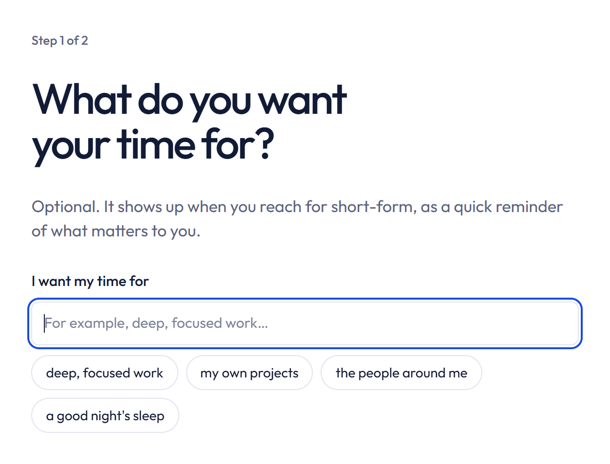
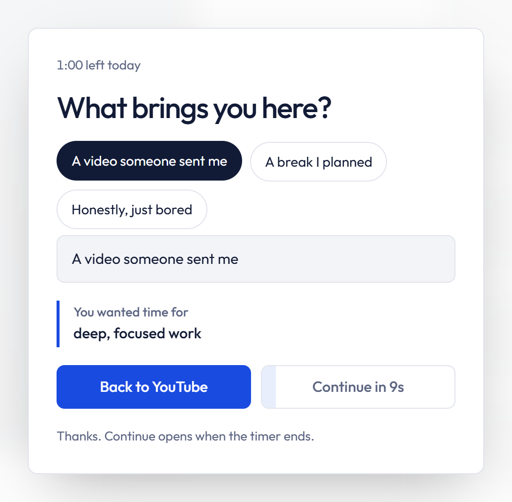
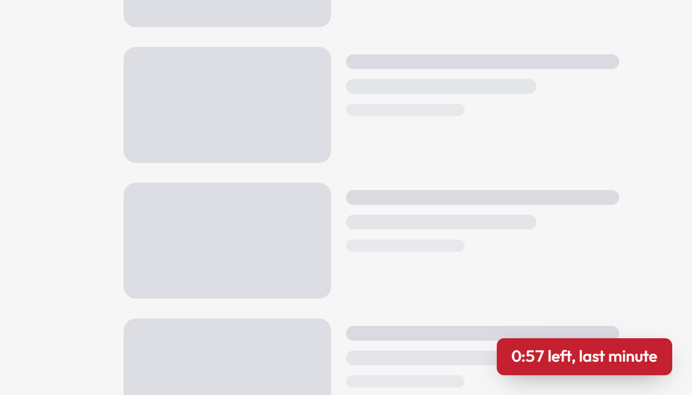
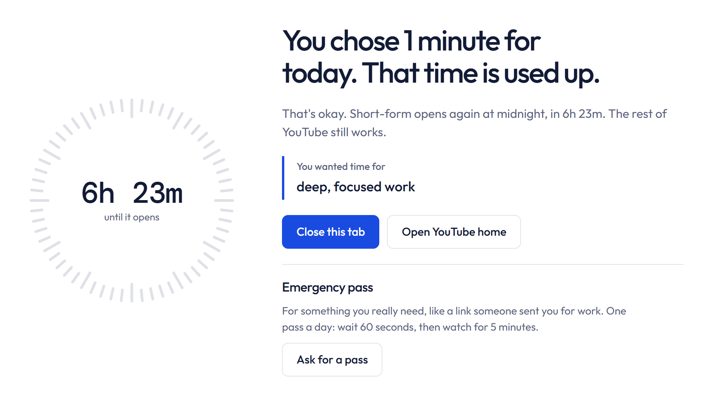
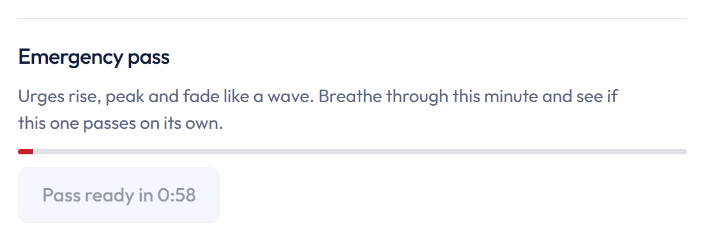
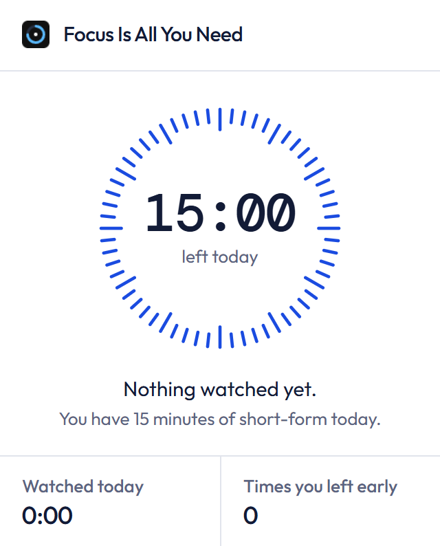
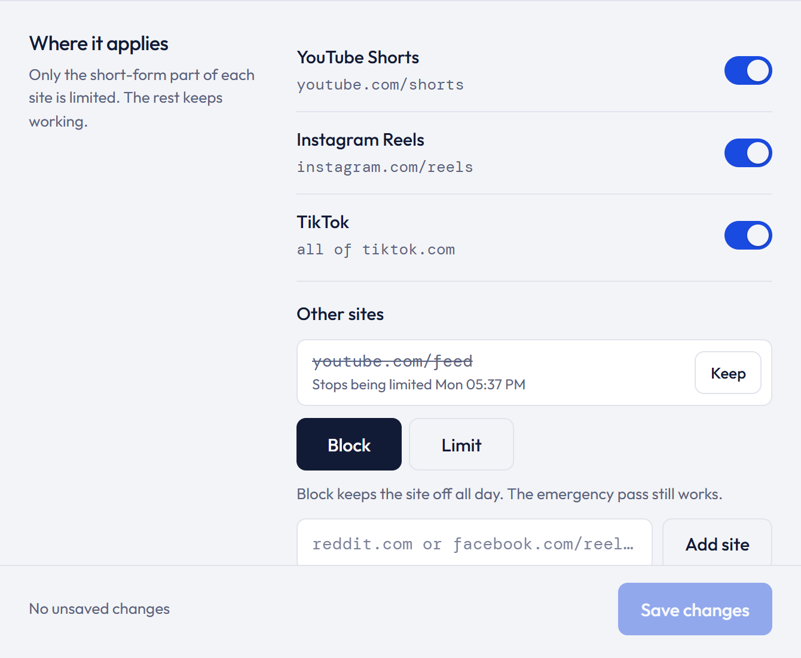

Set your rules
Two quick steps. Your choices come back at the moments you need them.
- What you want your time for (optional)
- How many minutes a day are fine
- Which sites to limit
You decide your rules once, while you're calm. After that the extension steps in only when you reach for short-form, and stays out of the way everywhere else.
A daily limit, the sites, and a short reminder.
A short pause, then a timer while you watch.
Short-form closes until midnight. Everything else keeps working.
Two quick steps. Your choices come back at the moments you need them.

The video waits while you pick why you're here. Your reminder is on screen.

It counts down only while a short-form page is open and visible. It turns red for the last minute, so the block never comes as a surprise.

You see your own reminder, not a scolding. Normal YouTube and Instagram still work.

Ask for a pass, wait 60 seconds, then watch for 5 minutes. The wait gives the urge time to pass on its own.

Click the extension icon to see time left, your last 7 days, and how often you left early.

Stricter changes apply right away. Looser ones wait 24 hours, and you can cancel them, so you never decide mid-scroll.

The fastest way to get it is to see the pause once.
Open a YouTube Short Settings